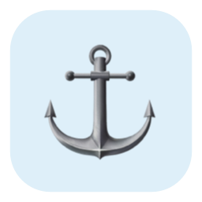

Berth 讓 macOS Dock 固定在你選擇的螢幕，同時維持游標自由移動。
它會阻止其他外側邊緣的 Dock 召喚手勢，並在 macOS 移動 Dock 後把它帶回來。
螢幕之間的共用邊界保持暢通，跨螢幕移動仍然自然。
Berth 會檢查 Dock 位置，必要時將它召回指定螢幕。
不監看鍵盤、不保存輸入內容、不收集分析資料；選用的更新檢查只會連線至 GitHub Releases。
直接下載 App，或交給 Homebrew 管理更新。
Apple Silicon，macOS 13 以上版本。
brew tap shihyuho/tap brew install --cask shihyuho/tap/berth
Berth 需要「輔助使用」權限。第一次開啟與更新後的授權方式請參考開始使用。